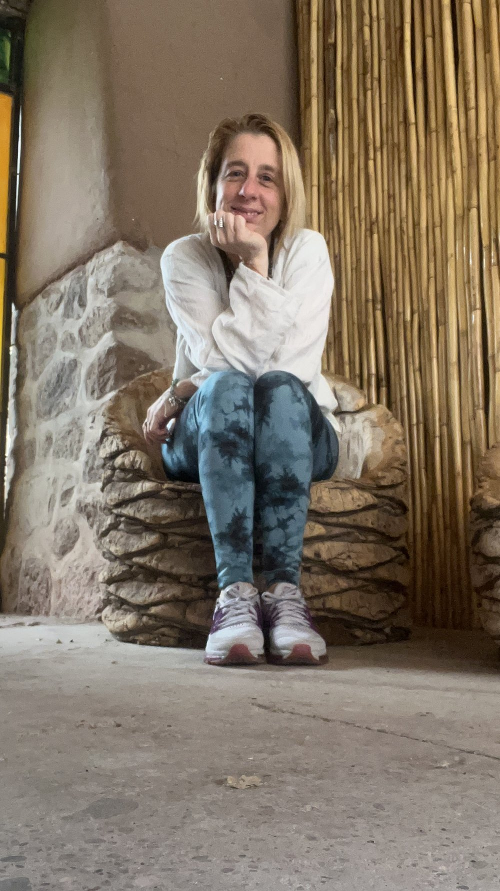

Lo que pasa
Aprendiste a sostener todo, menos a vos.
No de golpe. De a poco, sin darte cuenta. El cuerpo pide una pausa y vos seguís. Frenás cuando ya no queda otra. Te decís que es el frío, el trabajo, el partido, cualquier excusa antes que admitir que hace tiempo dejaste de escucharte.
Sostenés por miedo a soltar, no porque elijas sostener. Y mientras tanto, la fuerza — esa que ya tenés — espera bajo capas de mandatos y costumbre.
No necesitás otra explicación. Necesitás un método para volver.